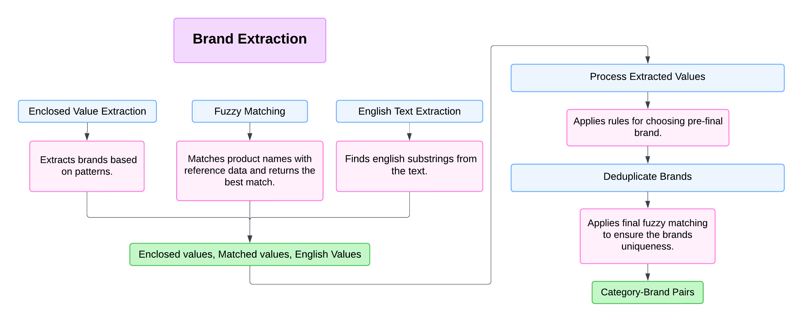

Daniam-NLP Project
Project Overview
This project is designed to process, cleanse, and extract relevant information from data files. The pipeline consists of various NLP (Natural Language Processing) tasks, including Armenian cleansing, translation, English cleansing, category extraction, brand name and unit extraction. The data files are primarily in .xlsx and .csv format, and the project is capable of handling batch processing for efficient data management.
Features
The project implements the following key steps in its pipeline: - ArmenianCleansing: Cleansing Armenian data. - Translation: Translating Armenian data to English. - EnglishCleansing: Cleansing English data. - CategoryExtraction: Extracting category-related information from the data. - BrandExtraction: Extracting brand names. - UnitMeasureExtraction: Extracting unit measures from the data.
The pipeline is highly configurable, and different processes can be enabled or disabled using a configuration file (config.json).
Data Sources
The following data files are required for the pipeline:
- Abbreviation.xlsx
- CityArmenian.xlsx
- CityEnglish.xlsx
- SasArmenian.xlsx
- SasEnglish.xlsx
- grouped_data.csv
These files should be placed in the appropriate directories as referenced in the config.json.
Configuration
The config.json file contains the paths to the input data and configurable parameters for the pipeline. Key sections include:
- Data: Specifies paths to input data files.
- Params: Controls settings like
n_jobsfor parallel processing andbatch_sizefor handling batch operations. - Pipeline: Enables or disables specific steps in the processing pipeline.
Installation
Follow these steps to set up the project on your local machine:
- Clone the repository:
```bash git clone https://github.com/your-repo/daniam-nlp.git 2. Ensure Python 3.11 is installed:
This project requires Python 3.11. You can download and install it from the official Python website: https://www.python.org/downloads/.
- Create a virtual environment
After installing Python 3.11, create a virtual environment for the project:
For Windows:
python -m venv nlp-env
nlp-env/Scripts/activate
For macOS/Linux:
python3.11 -m venv nlp-env
source nlp-env/bin/activate
This guide provides step-by-step instructions to install and activate CUDA 11.8 along with PyTorch 2.4.1 on both Windows and macOS/Linux systems.
For Windows
Prerequisites
- Ensure you have an NVIDIA GPU that supports CUDA 11.8. Check GPU compatibility on the CUDA GPUs page.
- Install the latest NVIDIA drivers from NVIDIA's driver page.
- Install Python 3.8 or later. Use the Python website or Anaconda (Anaconda website).
Installation Steps
- Install CUDA 11.8 Toolkit:
- Download the CUDA 11.8 Toolkit from NVIDIA's CUDA Toolkit archive.
-
Follow the installation wizard, ensuring the PATH variables are set correctly.
-
Install cuDNN Library:
- Download the cuDNN library for CUDA 11.8 from the cuDNN page.
-
Extract the archive and copy the contents into the CUDA installation directory (e.g.,
C:\Program Files\NVIDIA GPU Computing Toolkit\CUDA\v11.8). -
Install PyTorch 2.4.1: Open a terminal (or Anaconda Prompt) and run:
pip install torch==2.4.1+cu118 torchvision torchaudio --index-url https://download.pytorch.org/whl/cu118 -
Verify Installation: Launch Python and verify CUDA compatibility:
Ensure the version isimport torch print(torch.__version__) print(torch.cuda.is_available())2.4.1andTrueis printed for CUDA availability. -
Install dependencies
After activating the virtual environment, install the required dependencies:
pip install -r requirements.txt
First, navigate to the 'code' directory using the command:
cd code
To run the main script, execute the following command:
python main.py
Note: Using this script you can process all HDM, Inovice and Declarations data received from SRC.
Here is the specific requiremnts that you nee to change in the Config.json file to ensure that scripts works properly.
- HDM data: For Hdm data in the Pipeline part of the Config.json file set the DataSource parameter to 'HDM'.
- Invoice data: For Hdm data in the Pipeline part of the Config.json file set the DataSource parameter to 'Inv'.
- Declaration data: For Hdm data in the Pipeline part of the Config.json file set the DataSource parameter to 'Dec',
set the UnitMeasureExtraction parameter to false.
Classes
1. BrandExtractor
Responsibilities
- Pattern Matching: Extracts values enclosed in specific patterns.
- Fuzzy Matching: Matches product names with brands using
fuzzywuzzy. - Transliteration: Converts Armenian text to English using
unidecode. - Row Processing: Extracts relevant values for each row in a dataset.
- Parallel Processing: Processes large datasets in chunks using multiprocessing.
Methods
extract_enclosed_values(text): Extracts values enclosed in predefined patterns.fuzzy_match_brands(product_name, all_brands_df, category, final_score, threshold=76): Matches product names with reference brands.extract_english_in_armenian(text): Extracts embedded English words in Armenian text.process_row(row, all_brands_df): Processes a single row to extract values.apply_parallel_extraction(df, all_brands_df, num_workers=8, chunk_size=1000): Applies extraction logic in parallel.get_extracted_brands(data, all_brand_list): Extracts brands and adds them to the dataset.
2. BrandProcessor
Responsibilities
- Brand Finalization: Processes extracted values to identify the final brand.
- Preprocessing: Cleans and standardizes brand names.
- Matching Logic: Matches brand names against reference data with configurable thresholds.
Methods
transliterate_armenian_to_english(text): Converts Armenian text to English.process_extracted_values(row): Processes extracted values to determine the final brand.preprocess(brand): Cleans and preprocesses brand names.match(brand, sub_category=None, final_score=None): Matches a single brand name.match_all(data): Matches all brand names in the dataset.get_final_brand(data): Adds finalized brands to the dataset.get_matched_brands(data): Adds matched brands and their scores to the dataset.
Workflow Diagram
Below is a sample placeholder image showing the workflow of the BrandExtractor class. Replace this with your actual diagram.
